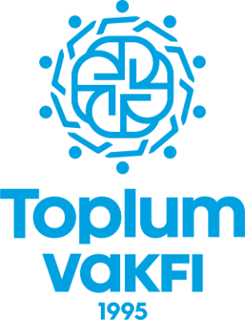

البقاء بالعربية

العربية
العربية
English
Türkçe
Shqip
$
USD
USD $
EUR €
TRY ₺
من نحن
من نحن
عرض الكل ←
قصتنا
رؤيتنا
رسالتنا
مهمتنا
أهدافنا
رسالة الرئيس
مجلس الإدارة
برامجنا
برامجنا
عرض الكل ←
غرس القيم
بناء الإنسان
صناعة مستقبل الشباب
المجتمع الواحد
حملة أمل
أثرنا
أثرنا
عرض الكل ←
أثرنا
الشفافية
أخبارنا
قصص
الشركاء
تواصل معنا
0
تبرع الآن
تبرع
$
0
بحث
✕
من نحن
برامجنا
مشاريعنا
الأخبار
أثرنا
قصصنا
الشركاء
تواصل معنا
حسابي
السلة
الملف الشخصي
البحث
العربية
English
Türkçe
Shqip
USD $
EUR €
TRY ₺
تبرع الآن
الرئيسية
برامج
تبرع الآن
قصص
المزيد
تبرع سريع
حيث الحاجة الأشد
رعاية الأيتام
التعليم والمنح الدراسية
الإغاثة الإنسانية
المياه النظيفة والآبار
القرآن والقيم
$
تبرع الآن